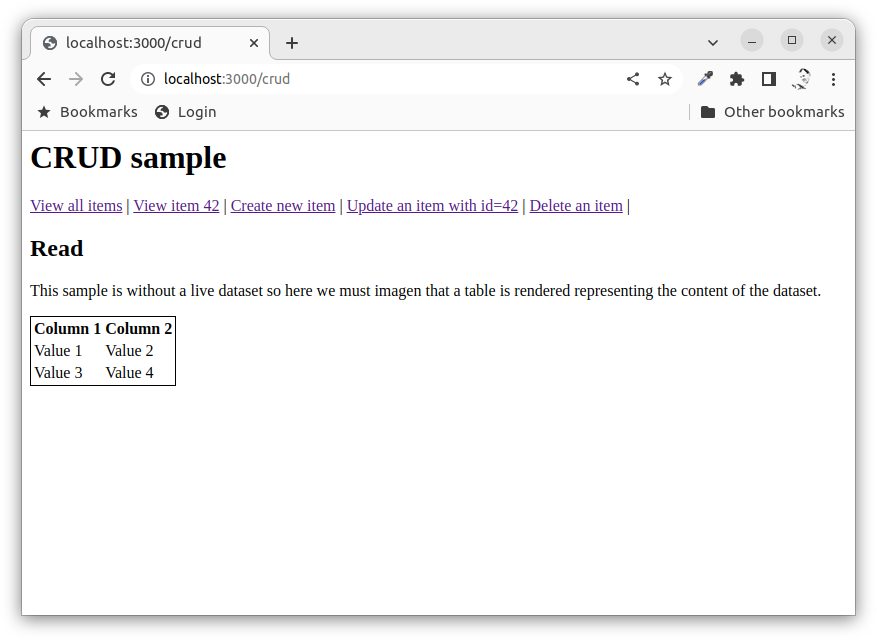
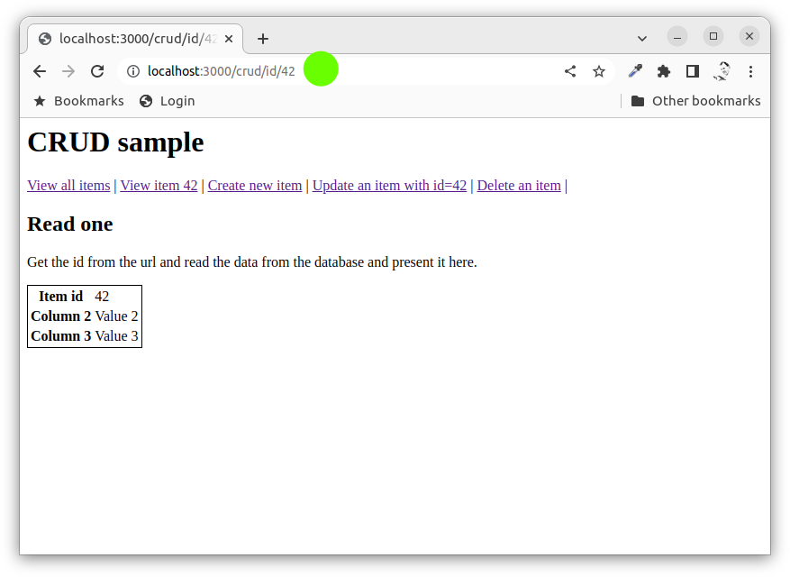
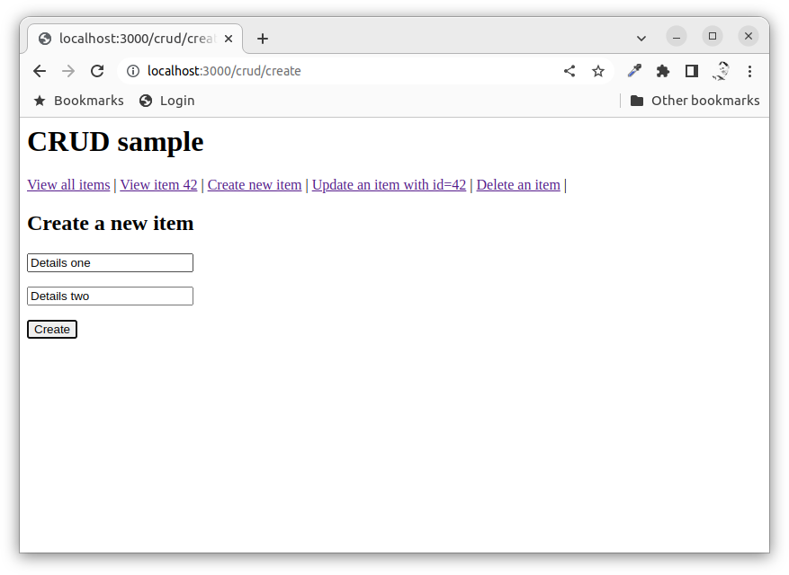
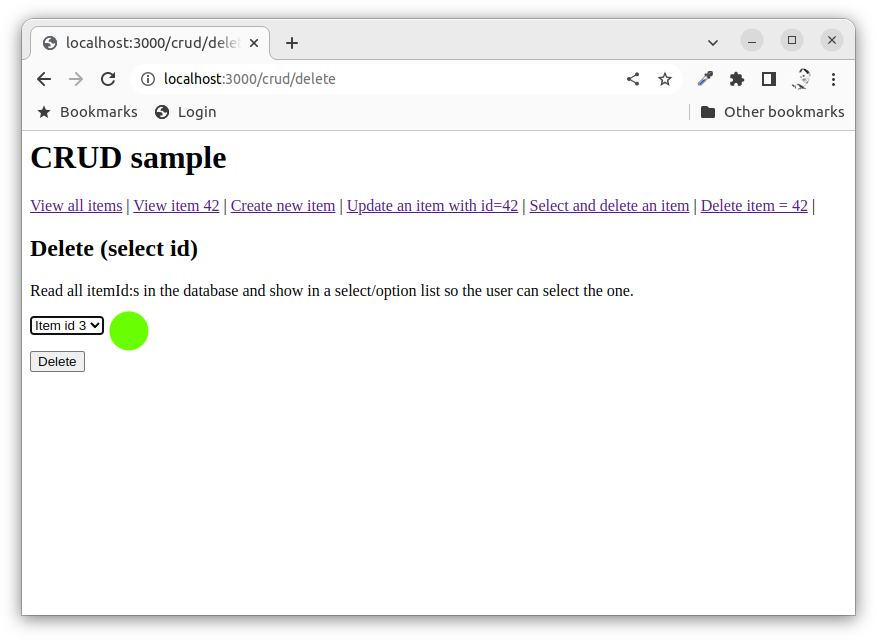
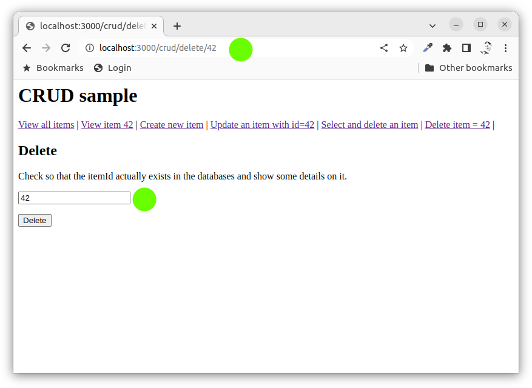

<!doctype html>
<html class="theme-5">
<meta charset="utf-8" />
<link href="../html-slideshow.bundle.min.css" rel="stylesheet" />
<link href="../style.css" rel="stylesheet" />
<script src="https://dbwebb.se/cdn/js/html-slideshow_v1.1.0.bundle.min.js"></script>

<title>Create, Read, Update, Delete (CRUD)</title>

<script data-role="slide" type="text/html" data-markdown class="titlepage center">
# CRUD
## Create, Read, Update, Delete (CRUD)
### Mikael Roos
</script>


<script data-role="slide" type="text/html" data-markdown>
# Agenda

* CRUD
* Web application with CRUD

</script>


<script data-role="slide" type="text/html" data-markdown class="titlepage center">
# CRUD
</script>


<script data-role="slide" type="text/html" data-markdown>
# CRUD

> "Create, read, update, and delete (CRUD) are the four basic operations of persistent storage"

* Common design pattern for working with persistent storage
* Implementations vary depending on the environment 

</script>


<script data-role="slide" type="text/html" data-markdown>
# SQL 

Using SQL statements

* Create - INSERT
* Read - SELECT
* Update - UPDATE
* Delete - DELETE

</script>


<script data-role="slide" type="text/html" data-markdown>
# RESTful API

RESTFul API with HTTP methods

* Create - POST
* Read - GET
* Update - PUT, PATCH
* Delete - DELETE

</script>


<script data-role="slide" type="text/html" data-markdown>
# NoSQL

The NoSQL way

* Create - create object and save()
* Read - find(), findOne(), findById()
* Update - replaceOne(), updateMany(), updateOne()
* Delete - deleteOne(), deleteMany()

</script>


<script data-role="slide" type="text/html" data-markdown>
# User interface

Provide user interface to work with storage

* Create - or add new entries
* Read - retrieve, search, or view existing entries
* Update - or edit existing entries
* Delete - deactivate, or remove existing entries

</script>


<script data-role="slide" type="text/html" data-markdown class="titlepage center">
# Web application
## User interface
</script>


<script data-role="slide" type="text/html" data-markdown>
# Read 

* Routes

```
// R read from database, list all items
router.get('/', controller.list)
router.get('/id/:itemId', controller.show)
```

</script>


<script data-role="slide" type="text/html" data-markdown class="center">
<figure>

<figcaption>Read all items and present them.</figcaption>
</figure>
</script>


<script data-role="slide" type="text/html" data-markdown class="center">
<figure>

<figcaption>Read one item and present it.</figcaption>
</figure>
</script>


<script data-role="slide" type="text/html" data-markdown>
# Create 

* Routes

```
// C create new item into the database
router.get('/create', controller.createForm)
router.post('/create', controller.createSave)
```

</script>


<script data-role="slide" type="text/html" data-markdown class="center">
<figure>

<figcaption>Create a new item in the storage.</figcaption>
</figure>
</script>


<script data-role="slide" type="text/html" data-markdown>
# Update 

* Routes

```
// U update an existing item in the database
router.get('/update/:itemId', controller.updateForm)
router.post('/update', controller.updateSave)
```

</script>


<script data-role="slide" type="text/html" data-markdown class="center">
<figure>

<figcaption>Update an item in the storage.</figcaption>
</figure>
</script>


<script data-role="slide" type="text/html" data-markdown>
# Delete 

* Routes

```
// D delete item from database
router.get('/delete', controller.deleteFormSelect)
router.get('/delete/:itemId', controller.deleteForm)
router.post('/delete', controller.deleteSave)
```

</script>


<script data-role="slide" type="text/html" data-markdown class="center">
<figure>

<figcaption>Show a list of items, select and delete it.</figcaption>
</figure>
</script>


<script data-role="slide" type="text/html" data-markdown class="center">
<figure>

<figcaption>The route contains the id of the tiem to delete.</figcaption>
</figure>
</script>


<script data-role="slide" type="text/html" data-markdown>
# Summary

* CRUD
    * SQL
    * RESTFul API
    * NoSQL
    * User interface
* Web application CRUD with forms

</script>


<script data-role="slide" type="text/html" data-markdown class="titlepage center">
# The end
</script>


<script data-role="slide" type="text/html" data-markdown>
</script>

</html>
